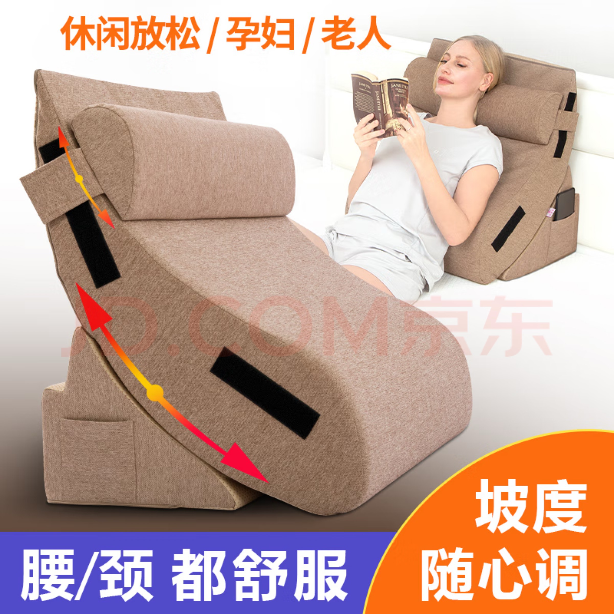
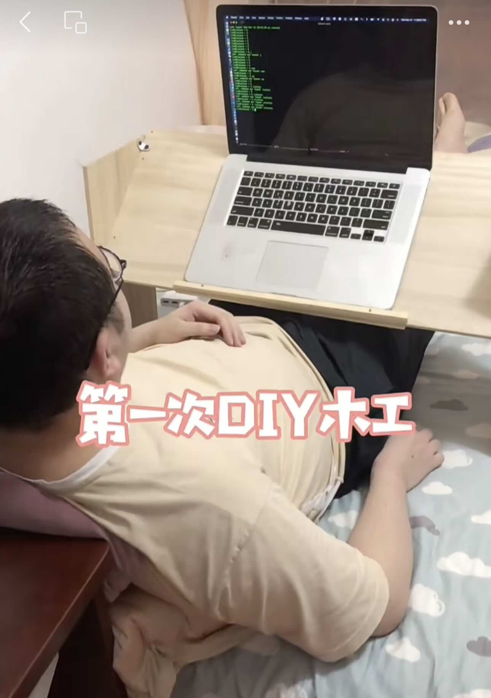

وسادة الاستلقاء | أصلي، ترجم بواسطة AI
أوصي بهذه الوسادة القابلة للاستلقاء. اشتريتها في مارس 2023. كلفتني حوالي 270 يوان صيني. اليوم (5 يناير 2025)، يتم بيعها بحوالي 240 يوان صيني على موقع jd.com. لقد استخدمتها لمدة عامين تقريبًا حتى الآن. هذا رائع لأن الأشياء التي لا تزال تستخدمها بعد عام هي الأشياء التي تحتاجها حقًا.
 المصدر: jd.com
لقد اشتريت العديد من الأشياء التي انتهى بها المطاف لتجمع الغبار. كنت بحاجة إليها واستخدمتها في الأيام أو الأشهر الأولى، ولكن بعد ذلك، نادرًا ما استخدمتها مرة أخرى. لدي أشياء أخرى لأفعلها، لذلك أستخدم بعض المنتجات للتركيز على أولوياتي وأترك منتجات أخرى جانبًا. إنها منتجات جيدة، لكنني لا أملك الوقت أو الحاجة الفعلية لاستخدامها.
على سبيل المثال، اشتريت جهاز Kindle Scribe مقابل ما يقرب من 3000 يوان صيني، وجهاز Nintendo Switch بحوالي 2000 يوان صيني.
ومع ذلك، فإن وسادة الاستلقاء هذه قد ساعدتني كثيرًا، تقريبًا كل يوم. أستند عليها للعمل مع جهاز الكمبيوتر المحمول الخاص بي. غالبًا ما أستخدم وسادة داعمة لتثبيت الكمبيوتر المحمول في وضع جيد للكتابة.
جزء آخر جيد من وسادة الاستلقاء هذه هو أنها تأتي مع وسادة صغيرة للرأس، وهي جيدة لدعم رأسك.
عندما كنت أعيش في شقتي، كنت أضع الوسادة الكبيرة القابلة للاستلقاء في زاوية سريري قبل أن أنام كل يوم. سريري المزدوج كبير جدًا.
ومع ذلك، عندما انتقلت إلى منزل والديّ، كان لدي فقط سرير سفلي صغير من سرير بطابقين. عندما أنام، أضع وسادة الاستلقاء على الكراسي وأخرج وسادة النوم الخاصة بي. ثم يمكنني النوم.
لقد صنعت حتى مكتبًا محمولًا للسرير لنفسي منذ سنوات. لكن المشكلة فيه كانت أنه يحد من نشاطي حيث كان عليّ أن أمرر جسدي تحت المكتب. عندما كنت أقف، كان عليّ رفع المكتب والابتعاد عنه. ولأنه كان مصنوعًا من الخشب، كان صلبًا. لم يكن مريحًا، وكان عليّ لمسه كثيرًا. أما المسند المصنوع من القماش فهو ناعم الملمس. مشكلة أخرى كانت أن مكتب السرير المحمول كان يأخذ مساحة كبيرة.
المساحة مهمة. أخبرني صديق أن أحد الأسباب التي جعلته يتخلى عن عمله في نقل البضائع هو أن سيارته الفان كانت تحتوي على صفين من المقاعد، مما جعل مساحة الشحن الفعلية أضيق مقارنة بالمنافسين، ولم يكن يرغب في شراء نوع جديد من الفانات.
لا تزال هناك مجالات للتحسين في هذا النوع من الوسائد القابلة للاستلقاء. تتميز هذه المنتجات بتصميم ذكي يتمثل في فصل الوسادة الكبيرة إلى جزأين يسمحان بضبط زوايا مختلفة. إحدى الاقتراحات هي أن يقوم المصنعون بإنتاج المزيد من الأنواع بأحجام مختلفة. مع الحفاظ على التصميم الذكي، يمكن للمصنعين صنع حجم يبلغ ثلثي العرض الحالي. هذا من شأنه أن يجعلها أسهل في التخزين أو التنظيم دون التضحية بالكثير من فوائدها.
